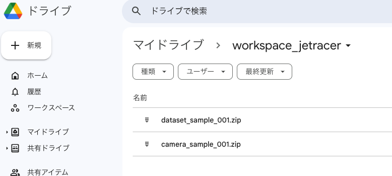
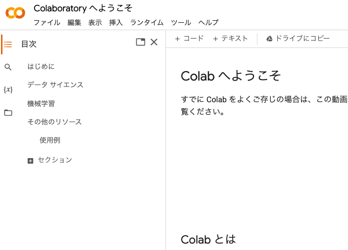
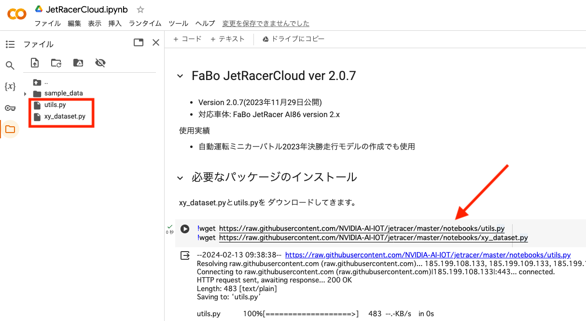
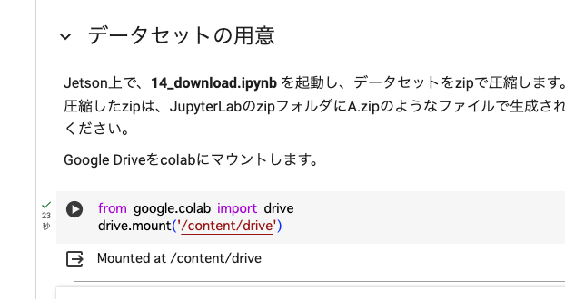

Google Colaboratoryを使ったクラウド学習

FaBo JetRacerCloud Version 2.0.7
Jetson Nanoだけでもエッジでの学習はできますが、インターネット環境があればクラウドでも学習はできます。
Google Colaboratory(Google Colab)を使用することでGPUなどのハードウェアなしで使うことができます。 Jupyter NoteBookは初めから用意されており、リッチな環境により学習時間を短縮、画像枚数もより多く扱うことが容易になります。
データの準備
13_anotation.ipynbで作成した教師データのsample001と11_record_camera.ipnbで作成した走行画像のsample001をあらかじめ用意しておきます。
データセットをzipファイルにまとめる
11_record_camera.ipnbで録画した画像データを12_file_manager.ipynbで編集し13_anotation.ipynbで教師データを作り、収集したデータセットをクラウドへアップします。JetsonNanoの14_download_data.ipynbを開いて
データセット（画像データ）を一つのzipファイルにしてGoogle Colaboratoryへのファイルアップロードできるようにします。

タスク(ディレクトリ)をドロップダウンリストから選んで、圧縮したいデータセットフォルダを選択します。
学習用のデータsample001(datasetフォルダのアノテーションで作成されたデータ)を１つのファイルにまとめます。ZIPに圧縮ボタンを押します。
続きまして、テスト用データsample001（cameraフォルダにあるデータ）を１つのファイルにまとめます。

画像ファイル枚数によって終了時間が異なります。処理完了が出るまで待ちましょう。
zip化されたファイル名は、アノテーション済みのdataset、走行録画はcameraがデータセット名に接頭辞がつきます。
dataset_sample_001.zipとcamera_sample_001.zipができます。こちら２つのファイルをお使いのPCにダウンロードします。
Googleのマイドライブへデータセットをアップロードする
作成したzipファイルは、zipフォルダにあります。ダウンロードしたいファイルを右クリックDownloadを選択します。
一旦、お使いのパソコンにダウンロードします。
右クリックでダウンロードします。
Google Colaboratoryを使用する前に、事前にGoogleアカウントが必要です。Googleにログインします。
事前に、Googleドライブ内にworkspace_jetracerという名前の専用のフォルダを作りましょう。
zipファイルをGoogleドライブにアップロードします。
新規ボタンをクリックして、作業フォルダ（workspace_jetracer）を作り、そのフォルダ内にzipファイルをアップロードします。

14_download.ipynbでzipにしたdataset_sample_001.zipとcamera_sample_001.zipをPCからGoogleドライブにアップロードします。

（例）保存先のディレクトリ workspace_jetracer/
Google Colaboratory を使うための準備
Google Colaboratoryにアクセスします。
https://colab.research.google.com/?hl=ja
Google Colaboratoryにようこそ

Google Colaboratoryによる学習
15_train.ipynbにあるリンク先にアクセスします。

https://colab.research.google.com/drive/1GbDrNiosTKSJNOJiCiVgv6V8X-0GDBfW?usp=sharing
下の矢印にあるセルに移動してShift＋Enterを実行します。２つのファイルが/content/にコピーされます。

下のコードを実行するとダイアログが表示されます。GoogleDriveへのアクセスを許可します。

今回は学習用のデータセットが１つの場合は、矢印のところに、DATA_ZIP = ["dataset_sample_001.zip"]を追記します。

また、同じセル内で下の矢印のように
1 2 | |
実行すると/content/ディレクトリにdatasetフォルダに解凍されるはずです。/content/dataset/sample001/

ファイルの結合、ファイルの枚数を確認します。
データ存在確認

データの結合（データが1つしかないので結合はしません。）

学習を実行します。エポック数はデフォルトで１００になっています。状況に合わせて調整してください。３０エポック改善が見られなかった場合は、その時のモデルをベストモデルとして、学習をストップして終了とします。

/content/ディレクトリにモデルが保存されます。
学習が完了し!cp /content/cloud_best_model.pth {DATA_FOLDER}を実行するとGoogleドライブにモデルがコピーされます。

モデルが追加されました。

以下を実行されますと作成したモデルがお使いのPCにダウンロードされます。こちらのファイルをJetsonのnotebookアップロードボタンで modelフォルダにアップロードします。

log.txt(実行結果)も保存されます。
lossが低くなるように任意のエポック数に変えて、学習させます。（無料でのご使用の場合は、時間制限があります。ご注意ください。）
検証動画を作成
Googleドライブworkspaceにある画像データ(camaera_sample_001.zip)を使用します。
以下を変更します。
1 | |
Googleドライブからコピーして解凍します。
動画を実行すると作成日時mp４ファイルが作成され自動でPCにダウンロードされます。動画を再生し検証します。動画ファイルが生成され動画が映し出されます。青い丸が推論結果の座標になります。
Googleコラボ上でも確認できます。

出来たモデルの評価を撮影済みの画像を使って評価します。結果が芳しくなかった場合は、データセットを増やしたり、エポック数を増やして再び学習し調整します。
Tip
Google Colaboratoryでの無料でお使いの場合は、GPUの使用時間制限がございます。データセット枚数とエポック数を調整しましょう。
保存した学習済みモデルのファイルをJetson Nanoのmodelディレクトリ(/home/jetson/jetracer/notebooks/model)へアップロードします。
Jetson NanoのJupyter labのアップロードボタンをクリックして、モデルpthファイルを/home/jetson/notebooks/model/へアップロードし16_convert.ipynb(TensorRT)にてモデルの最適化し、 17_run.ipynbにて自動走行します。

Tip
どんどん画像を結合し全体で学習して精度を上げていきましょう。
Tip
コーナリング中に乱れるような推論を極力無くしていきましょう。